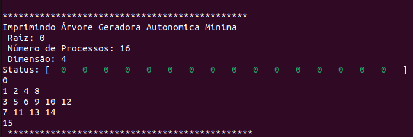

Trabalho Prático 2: Árvore Geradora Mínima Autonômica com o vCube
Autor: Rubens Zandomenighi Laszlo GRR20206147
Motivação trabalho
- A árvore geradora mínima é uma estrutura extremente importante em redes e sistemas distribuídos. Ela é a árvore que conecta todos os nodos da rede/sistema com o menor custo. No TP2 vc vai construir uma árvore geradora mínima sobre o vCube do TP1.

Implementação
printSpanningAutonomicTree: Função responsável por imprimir a árvore geradora mínima autonômica, sendo chamada conforme evento criado.
Estrutura Chamada
- Criado novo evento referente a impressão da árvore, dessa forma me permitiu durante os testes do trabalho, refinar a função conforme os testes executados. No caso dos logs finais do programa, conforme solicitado pelo professor Elias, estou adicionando o evento de impressão da árvore 1x, sendo ao final do programa.
Casos de teste
- Raiz: 0; Dimensões do vCube: 2; nenhum processo falho;
Utilizando a Flag Verbose para simular fluxo de construção da árvore, como Default, desligada.

Impressão da Árvore Geradora Mínima:
Impressão da Árvore Geradora Mínima padrão do programa:

- Raiz: 0; Dimensões do vCube: 3; nenhum processo falho;
- Testes para geração da árvore geradora
Utilizando a Flag Verbose para simular fluxo de construção da árvore, como Default, desligada.
Impressão da Árvore Geradora Mínima padrão do programa:

- Raiz: 0; Dimensões do vCube: 3; Lista de processos falhos: 1, 2, 4, 7;
Utilizando a Flag Verbose para simular fluxo de construção da árvore, como Default, desligada.
Impressão da Árvore Geradora Mínima padrão do programa:


- Raiz: 7; Dimensões do vCube: 3; Lista de processos falhos: 0;
Utilizando a Flag Verbose para simular fluxo de construção da árvore, como Default, desligada.

Impressão da Árvore Geradora Mínima padrão do programa:

- Raiz: 0; Dimensões do vCube: 4; nenhum processo falho.
Utilizando a Flag VERBOSE=1

Impressão da Árvore Geradora Mínima padrão do programa:

Código Fonte
Disponível em:
Link programa principal: tempo.cLogs:
Disponíveis em: